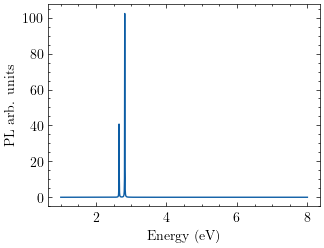

Exciton-Phonon#
Exciton-phonon coupling refers to the interaction between excitons (bound states of an electron and a hole) and phonons (quanta of lattice vibrations) in a material. This coupling can significantly affect the optical and electronic properties of the material. When an exciton interacts with phonons, it can scatter, leading to changes in its energy and momentum. This process is crucial for understanding phenomena such as thermalization, relaxation, and recombination of excitons in semiconductors and other materials. This workflow is split up into several sections:
DFT Calculate ground state wavefunctions of the system using Quantum Espresso
pw.x.DFPT Calculate the phonons and \(\Delta V_{scf}\) for the electron-phonon matrix elements using Quantum Espresso
ph.x.ELPH Compute the electron-phonon matrix elements \(g_{kkp}\) using the LetzElPhC code.
GW-BSE Compute BSE kernel and diagonalize on top of GW calculation, using the Yambo code to get the exciton wavefunctions.
EXC-PH Combine all of the above to compute the exciton-phonon matrix elements that are used to compute photoluminesensce spectrum with python scripts.
We will go through these steps with a simple system of hBN monolayer that can be readily run with relatively small computational cost. Step 1 of calculating the phonons takes some time, but one can parallelize and calculate at the same time the GW-BSE kernel at step 3. For more detailed information on exciton-phonon coupling and its effects on luminescence in hexagonal boron nitride, you can refer to the paper: [Lechifflart et al., 2023].
Step 0: DFT ground state calculation using pwx#
Details about the DFT ground state calculation using pw.x.
force_symmorphic=.true.
The DFT ground state calculations serve 2 purposes, to acquire the starting wave functions for the calculations of the phonons, but also to acquire the Kohn-Sham energies that are used for the MBT calculations to get the exciton wavefunctions.
Step 1: DFPT calculation using ph.x#
Details about the DFPT calculation using ph.x.
Step 2: DVSCF calculation using Letzelph-yambopy#
Details about the DVSCF calculation using LetzElPhC-yambopy.
For documentation on how to compile and run the LetzELPhC code using yambopy have a look at the LetzElPhC documentation.
We run yambopy l2y:
yambopy l2y -ph /path/of/ph_input.in -b n_i n_f -par n_qpools n_kpools -lelphc /path/to/lelphc_exe -D
Keep the -D flag to make sure we keep the required ndb.elph and ndb.Dmat which are the electron-phonon matrix elements, and the Dynamical matrices respectively.
We should now have the electron-phonon database ndb.elph.
Step 3: GW-BSE calculation using Yambo#
Details about the GW-BSE calculation using Yambo.
Construct the BSE kernel and diagonalize to get the exciton wavefunctions.
Make sure to turn on the flag: WRbsWF to write the exciton wavefunctions, which is commented out by default.
For the theoretical background on this section please look at GW and BSE.
Step 4: Exciton-Phonon calculation using yambopy#
Details about the Exciton-Phonon calculation using yambopy.
For this step we use these scripts to calculate the exciton-phonon matrix elements but also to calculate the photoluminescense spectrum of the material. The script we will be using is called ex_ph_program.py.
It takes a few basic inputs:
- calc_folder: /Path/ #where the calculations took place.
- SAVE_dir: calc_folder + '/path/to/SAVE'
- BSE_dir: calc_folder + '/path/of/job/bse/'
- elph_file: calc_folder + '/path/to/ndb.elph'
- Dmat_file: calc_folder + '/path/to/ndb.Dmats'
- nstates: 19*4 # Number of states to include in the PL, `nq * ntransitions` (e.g., 19*4)
- lumin: True # Compute luminescence if set to `True`
- Exph: True
- Temp: 20 # Temperature used in luminescence (in Kelvin, e.g., 20)
- ome_range:[1, 8, 1000] # Range for omega in the format `(min, max, numpoints)` (in eV, e.g., [1, 8, 1000])
- broading: 0.005 # Broadening (in eV, e.g., 0.005)
- npol: 2 # Polarization, set to 2 for 2D materials
Run the python script.
Now you obtain Ex-ph.npy and luminescence_intensities.dat. Which we can plot:

References#
EI Blount. Formalisms of band theory. In Solid state physics, volume 13, pages 305–373. Elsevier, 1962.
Alexandre C Dias, Julian FRV Silveira, and Fanyao Qu. Wantibexos: a wannier based tight binding code for electronic band structure, excitonic and optoelectronic properties of solids. Computer Physics Communications, 285:108636, 2023.
Paolo Giannozzi, Oliviero Andreussi, Thomas Brumme, Oana Bunau, M Buongiorno Nardelli, Matteo Calandra, Roberto Car, Carlo Cavazzoni, Davide Ceresoli, Matteo Cococcioni, and others. Advanced capabilities for materials modelling with quantum espresso. Journal of physics: Condensed matter, 29(46):465901, 2017.
Paolo Giannozzi, Stefano Baroni, Nicola Bonini, Matteo Calandra, Roberto Car, Carlo Cavazzoni, Davide Ceresoli, Guido L Chiarotti, Matteo Cococcioni, Ismaila Dabo, and others. Quantum espresso: a modular and open-source software project for quantum simulations of materials. Journal of physics: Condensed matter, 21(39):395502, 2009.
Jonah B Haber, Diana Y Qiu, Felipe H da Jornada, and Jeffrey B Neaton. Maximally localized exciton wannier functions for solids. Physical Review B, 108(12):125118, 2023.
Walter Kohn and Lu Jeu Sham. Self-consistent equations including exchange and correlation effects. Physical review, 140(4A):A1133, 1965.
Pierre Lechifflart, Fulvio Paleari, Davide Sangalli, and Claudio Attaccalite. First-principles study of luminescence in hexagonal boron nitride single layer: exciton-phonon coupling and the role of substrate. Phys. Rev. Mater., 7:024006, Feb 2023. URL: https://link.aps.org/doi/10.1103/PhysRevMaterials.7.024006, doi:10.1103/PhysRevMaterials.7.024006.
Andrea Marini, Conor Hogan, Myrta Grüning, and Daniele Varsano. Yambo: an ab initio tool for excited state calculations. Computer Physics Communications, 180(8):1392–1403, 2009.
Nicola Marzari, Arash A Mostofi, Jonathan R Yates, Ivo Souza, and David Vanderbilt. Maximally localized wannier functions: theory and applications. Reviews of Modern Physics, 84(4):1419, 2012.
Arash A Mostofi, Jonathan R Yates, Young-Su Lee, Ivo Souza, David Vanderbilt, and Nicola Marzari. Wannier90: a tool for obtaining maximally-localised wannier functions. Computer physics communications, 178(9):685–699, 2008.
Giovanni Onida, Lucia Reining, and Angel Rubio. Electronic excitations: density-functional versus many-body green’s-function approaches. Reviews of modern physics, 74(2):601, 2002.
Davide Sangalli, Andrea Ferretti, Henrique Miranda, Claudio Attaccalite, Ivan Marri, Elena Cannuccia, P Melo, Margherita Marsili, Fulvio Paleari, Antimo Marrazzo, and others. Many-body perturbation theory calculations using the yambo code. Journal of Physics: Condensed Matter, 31(32):325902, 2019.
Jonathan R Yates, Xinjie Wang, David Vanderbilt, and Ivo Souza. Spectral and fermi surface properties from wannier interpolation. Physical Review B—Condensed Matter and Materials Physics, 75(19):195121, 2007.